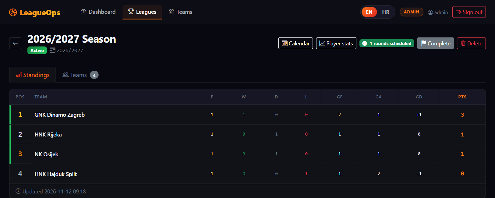

P-01 / full-stack
Sports League Management
Aplicación web multicapa para gestionar ligas deportivas de principio a fin, con la lógica de competición resuelta en el servidor.
- Generación de calendarios round-robin
- Clasificaciones con criterios de desempate
- Correcciones de resultados auditadas
- Crónicas de partido bilingües generadas con IA
- stack
- Java · Spring Boot · PostgreSQL · Thymeleaf · Docker
